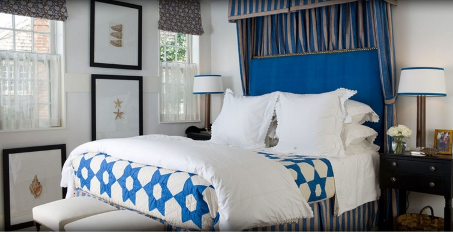
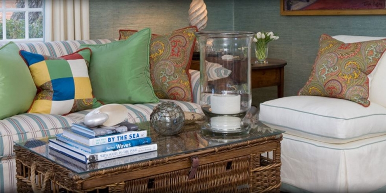

.png)
.PNG)
.PNG)
.PNG)
.PNG)
.PNG)
.JPG)
.JPG)
.PNG)
.PNG)


source
Alright, I promised you I would return with more Gary McBournie goodness, so here I am! 🙂 I found a cottage called Antique Cottage on his business site, and I want you to take a look at it. It is located in Nantucket, and nowhere on the site does it say that it is his personal cottage, but it sure looks like it could be one of the 5 or 6 historic homes that he has renovated on the island. You’re probably thinking…
Oh no…here we go again. Why do you think that, Kelly?
Well… take a look at those shell prints up there in the bedroom.
Don’t they look like the ones he painted for his former living room?
And this is a view of the living room in Antique Cottage.
gmcbinc.com
Doesn’t that slipper chair also look like one from his former living room?
And perhaps that striped sofa and those paisley throw pillows are the same as these…
And then there is this kitchen vignette in Antique Cottage.

Isn’t that tray very much (although not exactly) like the one we saw in his newest Nantucket kitchen here?
Anyway…it just made me wonder. 🙂
***
This next house I want you to see is no mystery though.
housebeautiful.com photo by Christopher Baker
Constitution, that little Nantucket fisherman’s boathouse, was featured in the August, 2007 issue of House Beautiful, and I can remember exactly when I saw the article for the first time.
housebeautiful.com photo by Christopher Baker
I am no fan of flying, and I was in New York City. I had purchased the issue specifically to keep me distracted on the flight home, and it certainly did its job! 🙂 I happily read and reread the piece (and a few others) on the flight and fell in love with this charming cottage on Old North Wharf.
housebeautiful.com photo by Christopher Baker
I learned that the owner bought the simple boathouse as a place to entertain summer visitors. (He already had a home on the island.) He knew that Gary McBournie had a reputation for saving neglected buildings on Nantucket and making something wonderful out of them. So he hired him to do the project.
housebeautiful.com photo by Christopher Baker
In designing the space, Mr. McBournie was inspired by photos of yachts from the 1920’s, vintage boating posters, a set of nautical flags he found in France…really anything boat related (and specifically the owners’ Hinckley Picnic boat). In fact, the sitting area was actually made from two bunks from a boat.
The kitchen got teak countertops and cabinet doors similar to those found on boats.
housebeautiful.com photo by Christopher Baker
The floors were kept rather simple…just painted with a blue deck paint and spattered with specks of red, tan, and white. The ceiling was left in its old rustic state (but the kitchen did get new appliances. 🙂 )
And then there is the sleeping loft that looks like it is straight out of an old ship.
housebeautiful.com photo by Christopher Baker
Beautifully outfitted with antiques, nautical accessories, and blue linens.
housebeautiful.com photo by Christopher Baker
And finally, because this boathouse is waterfront, there is a great deck right out over the water’s edge.
housebeautiful.com photo by Christopher Baker
If the owner was looking for a place to entertain summer visitors, he got that and so much more in the finished project. I know you are ready to pack your bags and move in, right? Me too. 🙂
***
But I have one more Gary McBournie house you just have to see. I believe this one is a more recent project, and again, it is on Nantucket. (I told you I love all his Nantucket work!)
Here is the simply classic entryway (with more maritime influence in the space.)
And the huge living room.
Mr. McBournie even designed the gorgeous table in this dining room.
I really like this white kitchen with its touch of bright green peeking out of the cabinets.
Is that open shelving for pots below the stovetop?
The real star of this house to me is the bedroom…blue again. 🙂
Did you notice the touches of green on the window valances and bed curtains (and the throw pillows)?
So pretty!
One last thing to tell you. Have you seen his book that just came out last fall? I have not been able to put my hands on it, but I bet it will be good.
Living Color: A Designer Works Magic with Traditional Interiors
(an Amazon Affiliate link)
And that brings us to end of our tour of some of Gary McBournie’s work. I hope you have enjoyed the spaces there on Nantucket Island.
I know many of you are making plans (and food!) for the 4th of July. Here’s hoping you have a fun filled holiday with family, friends, and fireworks! Enjoy it all. 🙂
Until next time…


.PNG)
I absolutely love his work. I want that book as well! Thanks for the tour. I think you are on to something!
———————————————————————
Thank you Cindy. I am on the lookout for that book too. It should be filled with great rooms!
Kelly
Well, I see some rooms I absolutely could move right into… Nantucket love, I think. Thanks for the introduction to this designer, will have to keep an eye out in the future for more of his work. Hope the Fourth was enjoyable – we are waiting for the rain from the hurricane to pass on by. It’s been a gloomy day, but the Bristol (R.I.) Fourth of July Parade, the oldest in the country, went off without a hitch. My friends are sailing for the week and are berthed at Nantucket, which is where the hurricane will come the closest to the New England coastline tonight. I hope they have a safe night.
———————————————————————-
I am amazed the parade was able to go on. I would have thought all that hurricane weather would have rained out most things in your area. So glad to know it didn’t! Hope your friends made it safely through the storm. What a weekend for a hurricane! My son was in Florida where the beaches were packed. He was not too happy with that, but it certainly beat the rain in your area. I guess we can dream of sunny days in Nantucket. 🙂
Kelly
Nantucket is a favorite place on Earth for my family – our Summer escape! And I did not even know about that designer. This was a lovely look inside!
———————————————————————
What a wonderful place for a Summer escape! I am happy that you liked seeing Mr. McBournie’s rooms. I hope that you are finding Savannah to your liking. It is such a lovely city, and full of gorgeous gardens that you most certainly will appreciate. 🙂
Kelly
Oh what great inspiration today…and yes, i remember that House Beautiful feature…such an iconic picture of that weathered wood and gorgeous flowering vines….have a fabulous 4th Kelly!
———————————————————————
Yes, that weathered wood cottage with the vines is pure Nantucket! We all need a cottage like that on the beach somewhere; don’t we Shirley? I hope your 4th was a good one. 🙂
Kelly
Kelly,
Thanks for the inspiration. I love green touches lining the inside of the kitchen cabinets and green tabs on the bed linens. McBournie has great eye for details. Have a happy and healthy 4th of July filled with family, friends and food.
————————————————————————
I knew you would like the green Dawn! I loved it too…just enough to add an extra special touch to the space. I hope your holiday was a good one!
Kelly
Thank you…just beautiful and inspirational
——————————————————————–
You are quite welcome! I am so happy you liked the rooms Jennifer.
Kelly
I really enjoyed part 1 & 2! I could move into any one of those homes! Thanks for introducing me to his work! Happy 4 Th. to you too! 😉
———————————————————————-
Thanks Donnamae! Glad I could introduce you to Gary McBournie. 🙂
Hope you had a great holiday!
Kelly
You are a super sleuth. Just sayin’. 😀
He definitely seems to use things again. But he does it SO well! Thanks for sharing more pretty pictures with us!
Hope you and your family have a great 4th!!
———————————————————————–
Ha ha! I am just very detail
obsessedoriented. 🙂 Glad you enjoyed the room pictures. I hope you had a great 4th of July!Kelly
Kelly,
I love his work but hands down, the House Beautiful house/cottage is my favorite. I love some of the details that you can’t miss.
Nantucket wouldn’t be a bad place to live!
Enjoy your 4th of July. I look forward to all of your posts.
Karen
——————————————————————–
That little nautical house is just perfect. Isn’t it?! I agree…Nantucket would definitely not be a bad place to live. 🙂 (Although I believe traffic is a real pain at times.)
Hope your 4th of July was a good one!
Kelly
Happy Holiday!
Thank you for introducing me to G.McBournie, Nantucket. I like that area and follow Susan Branch.
Part I house is my favorite! Where can I find those bed skirts?
Small block quilts?
———————————————————————-
Nan, I am happy that you now know about and like his work. Nantucket looks like a dream of a place. I love Susan Branch’s sweet work too. I think I have enjoyed her work since her very first book looooong ago.
I believe those bed skirts in the first house were custom made…so I am afraid there is no source for them. I loved those postage stamp quilts too! It seems like I remember seeing some years ago either in the Lands End catalog or at Kohls in the Ralph Lauren Chaps dept. J.C.Penney had a similar style in black and cream and also a red and cream. It was the Ralph Lauren American Living line a few years ago. I checked Ebay for all of those but had no luck. Keep checking back though. Something might turn up!
Kelly
Yummy blues and greens in the bedroom. But that little secretariat in the entry is absolutely delicious! Beautiful post!
———————————————————————-
Didn’t you just love that touch of green to brighten things up there?! Oh yes, that little desk was so charming.
Glad you enjoyed the post Peggy!
Kelly
I’ve enjoyed seeing G.McBournie’s work. Thank you for introducing him to me. I’m planning to do some interior painting this summer and thought I’d go with a very light khaki or taupe and punch it up with red. Red is my second favorite color. However, after seeing all the white and blue now I’m re-thinking it and blue is my favorite with red close by. ABTW right now all my interior paint palette is the same as GMB’s that you show in his former living room, the second photo. It’s been great and still like it, but time for a change.
Kelly and all have a great 4th, celebrate and cherish our freedom, and may you arrive at all your destinations safely!
——————————————————————–
Glad I could introduce Mr. McBournie’s talent to you! Good luck with your painting projects. Like you, I love the blue and red together. We have outdoor painting to start at some point, and I am NOT looking forward to that.
Kelly
Just caught this latest post before I go out and about to run errands! All I can say is “WOW!” I love it– especially the last floral shot– just perfect for the 4th! I’m inspired once again. Will have to go back and review later on this 3 day holiday! Happy 4th, Kelly!
———————————————————————–
Hope you got all your errands run and projects completed for the 4th. Busy busy I know! I hope you get time to go back and savor Gary McBournie’s rooms. They just say “summer” to me.
Happy 4th to you Louvina!
Kelly
I am in love. The Constitution would be so wonderful to stay in for a week or two, wouldn’t it? He did a beautiful job with the design/nautical feel. I love the kitchen and bunk seating areas the best. Oh and the last photo of those lovely Nantucket baskets with floral goodness, well, what a nice way to end the post! Thanks for a feel good morning wake up Kelly. Right now, I am having my morning coffee on that adorable waterside deck, taking in the sun, breeze, water and seagull sounds of course! Dream…dream…. Oh, and I am not a big fan of flying either, your not alone. Have a wonderful holiday. Until next time.
Debra
———————————————————————–
I could live in that little house! (Not so sure how it would be in a storm, but if it has survived this long, it must be built pretty solid.) I am glad to know I am not the only one who does not enjoy flying. As I type this, our son has just gotten off a 6 hour flight to Seattle for an interview tomorrow. Fingers crossed he does well!
Kelly
Wonderful! Thank You for all you Inspire us with. Have a Great Weekend Kelly. Moj Beli
———————————————————————
You are most welcome! Thank you for always taking the time to read and leave a comment on the post.
I hope your weekend has been a good one!
Kelly
What a great post to start my day! McBournie is divine!I am going to look for his latest book. Happy 4th!
———————————————————————
Happy 4th to you Martha! I am so glad you enjoyed seeing Gary McBournie’s work. He has such a great way with classic interiors.
Kelly
Happy July 4th to you and your family. These homes were beautiful and I always have to take a second look to see the detail that you mention, you have an eye for that.
———————————————————————-
Thank you Cheri! I hope you had a good holiday. Those homes always make me gawk over them!
Kelly